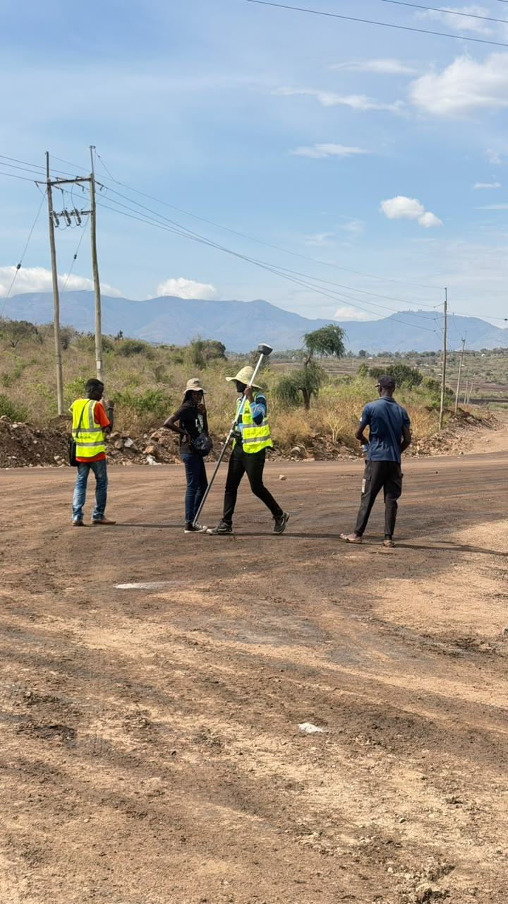

Vision
Leading with sustainable solutions
To be a leading force in construction, energy, and infrastructure - recognized for safe, cost-effective, and sustainable solutions that transform communities.
About Takbir
Who We Are
As Takbir General Trading Company Limited, we view construction as more than infrastructure. It is about building communities, empowering people, and shaping a sustainable future.
Since our establishment in 2013, we have grown into a trusted company delivering civil works, engineering, renewable energy, water solutions, and petroleum services across Kenya.
We bring value-driven solutions that combine quality, safety, and innovation - while creating employment and skills for disadvantaged communities.


Leadership
“We measure success by the roads people travel, the power communities switch on, and the skills our teams carry forward.”
Our leadership sets the tone for safety, commercial discipline, and community partnership - from Nairobi headquarters at Hughes Building to remote road corridors across Kenya.
Vision & Mission
Vision
To be a leading force in construction, energy, and infrastructure - recognized for safe, cost-effective, and sustainable solutions that transform communities.
Mission
To deliver high-quality infrastructure and energy projects while empowering communities through employment, training, and skills development.
Philosophy
Every project must positively impact people, adopt eco-friendly practices, and finish on time, within budget, and beyond expectations.
Our Journey
From a modest start, Takbir has evolved into a company able to manage large-scale civil works while expanding into renewable energy and petroleum logistics.
Train unskilled labor into skilled professionals, meet international quality and safety standards, maximize client value, and grow regional recognition.
Expanded beyond construction into energy and logistics so we remain relevant to Kenya’s development priorities.
Continuous improvement of ranking and reputation in the civil and construction sector through disciplined delivery.
Work With Us
Whether you need a road upgrade, structural works, or energy solutions - we are ready to plan and deliver.
Contact Takbir